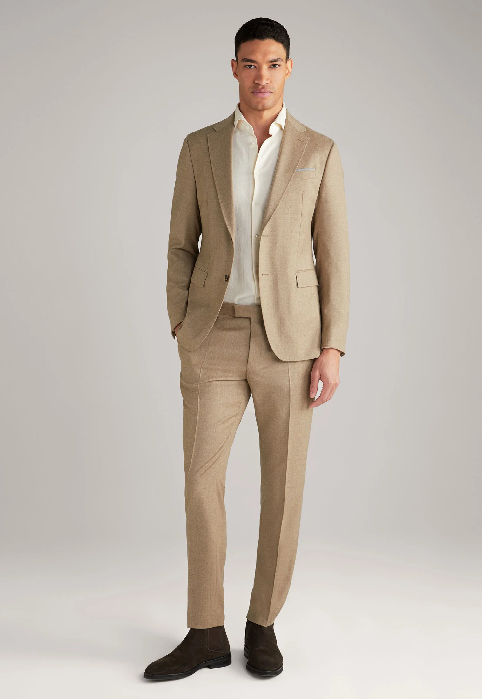

Piekny i majestatyczny strój uczniowski
Niezły Garnitur
Szczegoły produktu
- Stan: Standardowy
- Kształt kołnierza: Kołnierz rewers
- Zapięcie: Guziki
- Wzór: Melanż
- Kieszenie: Kieszonka na klatce piersiowej, kieszenie klapowe, kieszeń wewnętrzne, boczne, tylne
- Szczegóły: Ochraniacze ramion
- Numer produktu: JO922A0F4-B11
Materiał i wskazówki pielęgnacyjne
- Materiał: 98% wełna, 2% elastan
- Tył: 98% wełna, 2% elastan
- Dolna część: 98% wełna, 2% elastan
- Górna część: 98% wełna, 2% elastan
- Wypełnienie: 55% wiskoza, 45% poliester
- Podszewka: 100% wiskoza
Rozmiar i krój
- Fason: Regular Fit
- Kształt: Prosty
- Długość rękawa: Długi rękaw
- Wewnętrzna długość nogawki: 79 cm w rozmiarze 48
- Cała długość: 72 cm w rozmiarze 48
